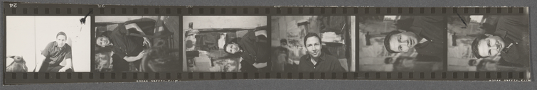
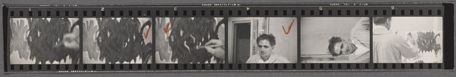
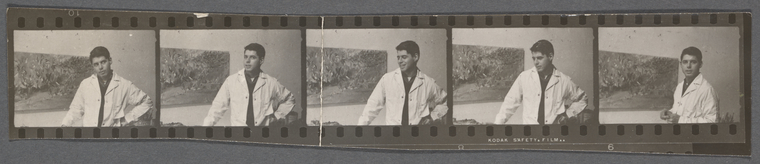
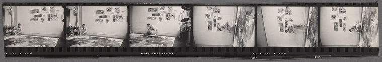
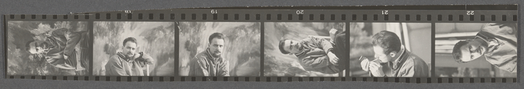
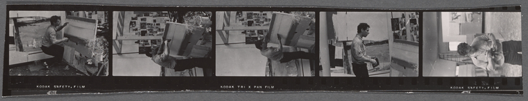
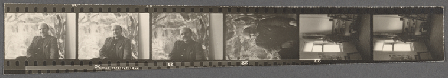

Photography
"A picture is a secret about a secret, the more it tells you the less you know." Diane Arbus
"A picture is a secret about a secret, the more it tells you the less you know." Diane Arbus
One of the phrase we have all heard throughout our lives is "Think before you speak!" This statement is a recognition that the latter is possible without the former. We can all recall instances where we found ourselves thinking or saying aloud "I didn't mean to say that, or I wish I hadn't said that." It suggests to us that there are varied ways of expressing oneself and of seing things. So what did the Swiss-American photographer and filmmaker Robert Frank mean when he said
"The eye should learn to listen before it looks."
Photography like drawing, painting, and sculpture has been used to document events like The American Civil War, commemorate significant people with portraits, and create works of art. Robert Frank directs us toward another dimension of the image making process. He suggests that photography isn't exclusively dependent on the visual. Does being a good listener make one a good photographer and artist? Frank, who turned 93 two weeks ago seems to think so, and he presents listening as a prerequesitive to seeing.
"Above all, life for a photographer cannot be a matter of indifference"
Here Frank tells us that a photographer is not merely a casual observer or recorder of events, but someone with a purpose and a commitment to a vision. One thinks of the Danish-American journalist and photographer Jacob Riis, who used photography to bring attention to social problems like slum conditions and general poverty in New York City. For Riis and many other photographers images were and continue to be another way of communicating with the public.
"Only photography has been able to divide human life
into a series of moments, each of them has the value of a complete existence."
Eadweard Muybridge
While I photographed every street in Harlem in New York City, I was aware that I was capturing buildings, spaces and moments that would only exist in the photographs. Many the buildings I photographed simply don't exist anymore in the form I found them. I was photographing the transformation of things and thinking about transitions and permanence. Moving among what is lost forever and what is yet to be discovered.
"There is only you and your camera. The limitations in your photography are in yourself, for what we see is what we are."
Ernst Haas
Here the Austrian photographer Haas suggests that the camera is only a tool of the photographer's ability to make a photo. Is it possible for a photographer with an expensive camera to make "bad" images or images that are not interesting? Here get a hint of what can be called style. What are the things photographers choose to capture or create? One of the shocking things I remember from my youth was when I learned that many of the Civil War photographs were staged, which speaks to us of the power of photography as storyteller and communicator of ideas and information.
"Photography is a way of feeling, of touching, of loving. What you have caught on film is captured forever. It remembers little things, long after you have forgotten everything."Aaron Siskind
With all of the increasing talk of AI, super computers, and the coming robot revolution; images may be our first and ongoing super memory container. Unlike our brains that discard whatever it deems unnecessary or painful, photographs have no such discernment. Photograph are like our very own visual encyclopedic memory. Think a decillion selfies. I am also thinking of Japanese artist Nobuyoshi Araki, who photographed his wife as she was dying and as a lifeless body.
With diaries or other writings, we will have to decode the meaning of what is being said. A photograph transports you to another place and time, a former version of yourself. Last year while I was very ill, I decided to pull out old photos I hadn't seen in years. In a short time I found myself weeping as a flood of memories of people and places long gone became very real and present. Photography continues to push us towards the personal and the intimate.
Geo. P. Hall & Son, Herald Square, 1909
Wurts Brothers, Madison Square Garden, New York City, erected 1890, design by Stanford White.